Las capturas de esta página se tomaron en octubre de 2014, por lo que pueden ser ligeramente distintas de lo que se ve en la última versión de Brackets.
Las capturas de esta página se tomaron en octubre de 2014, por lo que pueden ser ligeramente distintas de lo que se ve en la última versión de Brackets.
Las extensiones permiten ampliar las capacidades de Brackets. Normalmente, cada extensión realiza una tarea muy concreta y la instalación y desinstalación de extensiones es muy sencilla. Al final, cada usuario acaba teniendo su propia colección de extensiones instaladas, de acuerdo con sus gustos y necesidades. En esta lección se comenta cómo instalar y desinstalar extensiones, así como las extensiones que en mi opinión resultan útiles para el aprendizaje de HTML y CSS.
Existe un registro oficial de extensiones de Brackets, el Brackets Extension Registry, que muestra todas las extensiones disponibles, en orden inverso de publicación.
Para orientarse entre el gran número de extensiones, Brackets incluye un gestor de extensiones que se comenta en esta lección y que obtiene la información del Brackets Extension Registry.
Hasta noviembre de 2015 la web Brackets Extensions Weekly ofrecía un informe semanal sobre las extensiones de Brackets: Extensiones más descargadas, Temas más descargados, Nuevas extensiones publicadas, Extensiones actualizadas, pero por desgracia ha dejado de publicarse desde entonces.
La web Brackets Extensions también ofrece información detallada sobre las extensiones, aunque no puede ofrecer información sobre el número de descargas porque esa información ya no está disponible
El menú o el icono Gestor de extensiones abren la ventana del Gestor de extensiones.
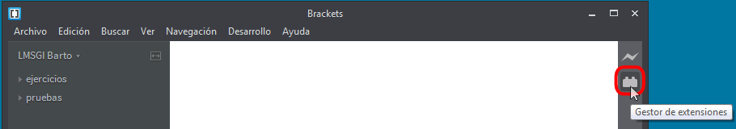
El Gestor de extensiones permite instalar extensiones y temas en Brackets, así como actualizar o desinstalar las extensiones ya instaladas. Para cerrar el gestor de extensiones hay que hacer clic en el botón Cerrar.
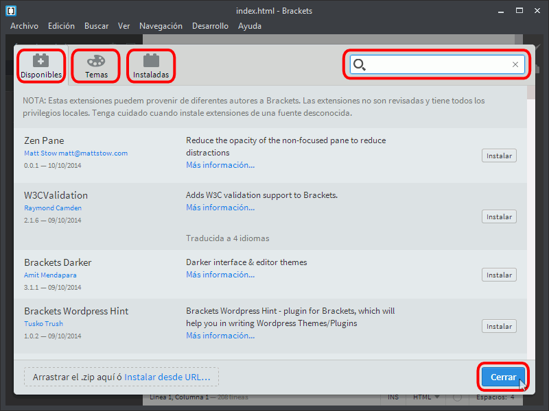
Para instalar una extensión, se puede escribir su nombre en el cuadro de búsqueda y hacer clic en el botón Instalar:

Una vez instalada se mostrará una ventana con el resultado de la instalación.
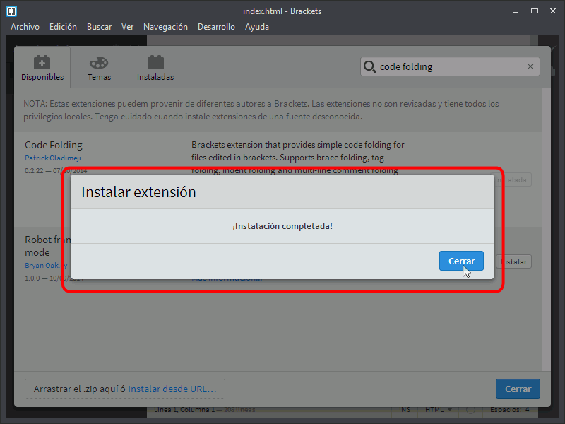
Las extensiones ya instaladas pueden verse en la pestaña instaladas del gestor de extensiones.
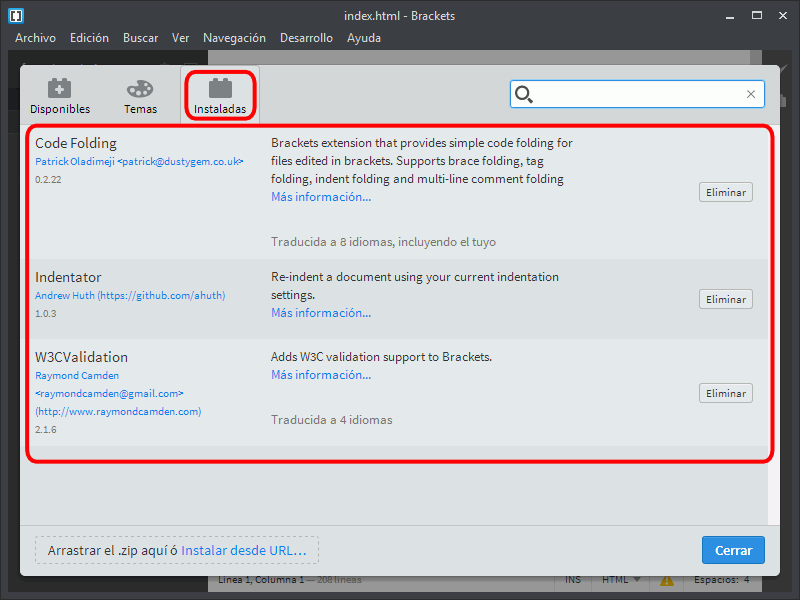
Para desinstalar una extensión hay que abrir el Gestor de extensiones y en la pestaña de las extensiones instaladas hacer clic en el botón Eliminar de la extensión que se desea desinstalar.
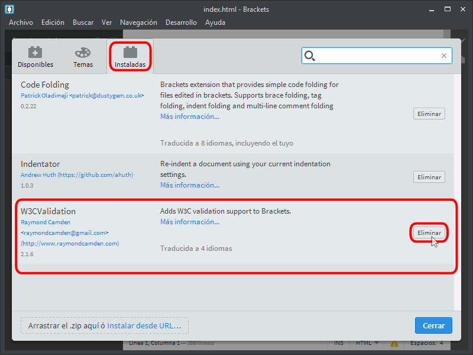
Una vez marcadas todas las extensiones que se quieren desinstalar, hay que hacer clic en el botón Cerrar.
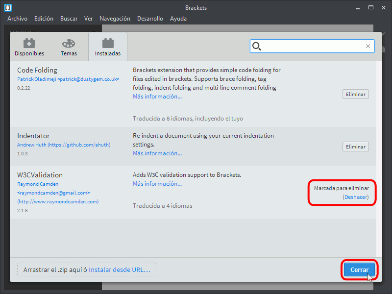
Se mostrará una ventana de confirmación. Para desinstalar las extensiones, hay que hacer clic en el botón Eliminar extensiones y recargar.
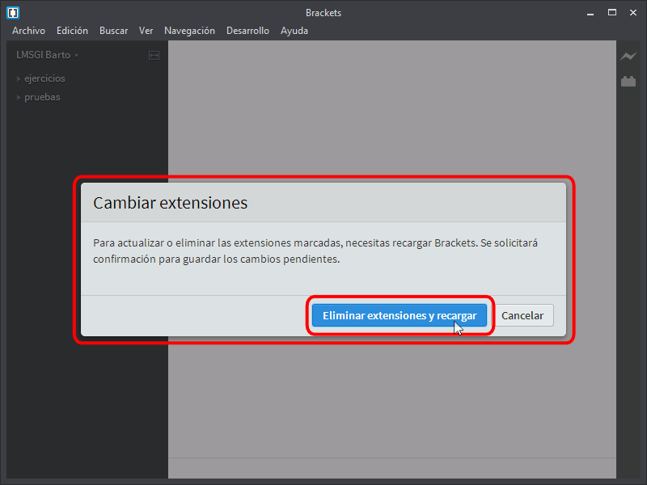
Si se vuelve a abrir el Gestor de extensiones, en la pestaña de extensiones instaladas puede comprobarse que la extensión ya no está instalada.
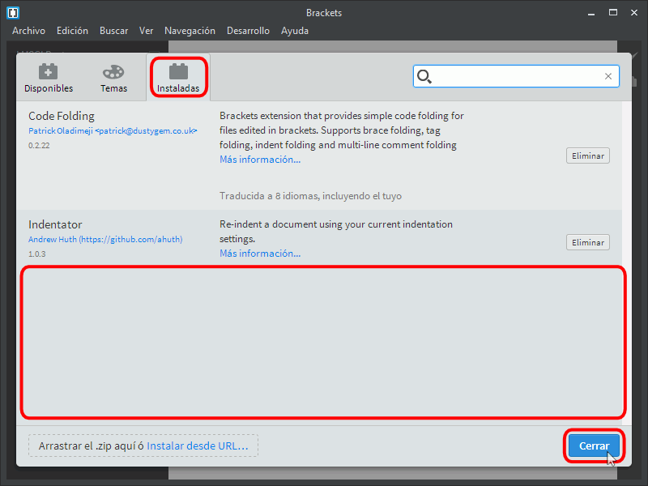
Si se han publicado nuevas versiones de alguna de las extensiones instaladas, Brackets mostrará el icono del Gestor de extensiones en color verde.
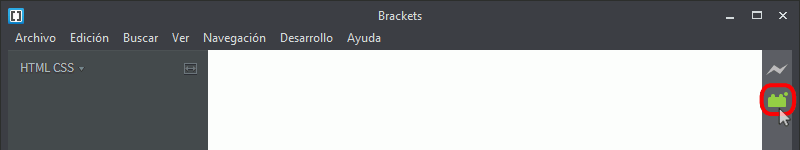
El gestor de extensiones muestra en la pestaña de extensiones instaladas el número de extensiones pendientes de actualizar al princicpio de la lista. Para actualizar las extensiones, hay que hacer clic en el botón Actualizar.
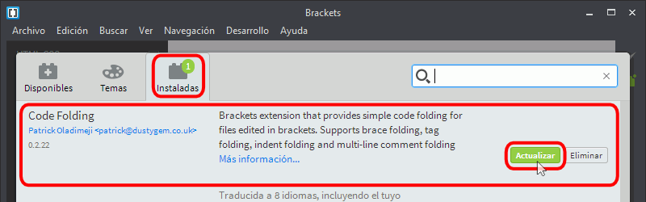
Tras unos segundos, se mostrará un aviso indicando que la instalación se ha descargado y que se instalará al reiniciar Brackets. Para cerrar el aviso, hacer clic en el botón Cerrar.
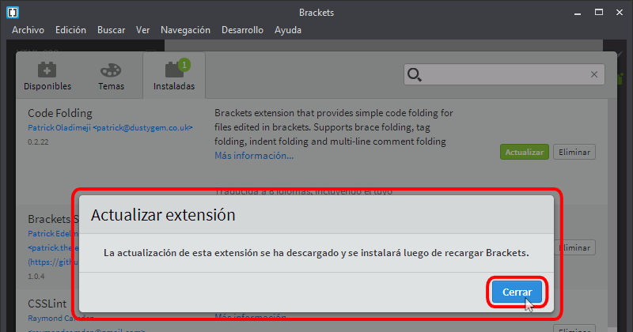
Se volverá a mostrar la lista de extensiones, indicando que la extensión está maracada para actualizar. Para salir del gestor de extensiones, hacer clic en el botón Cerrar.
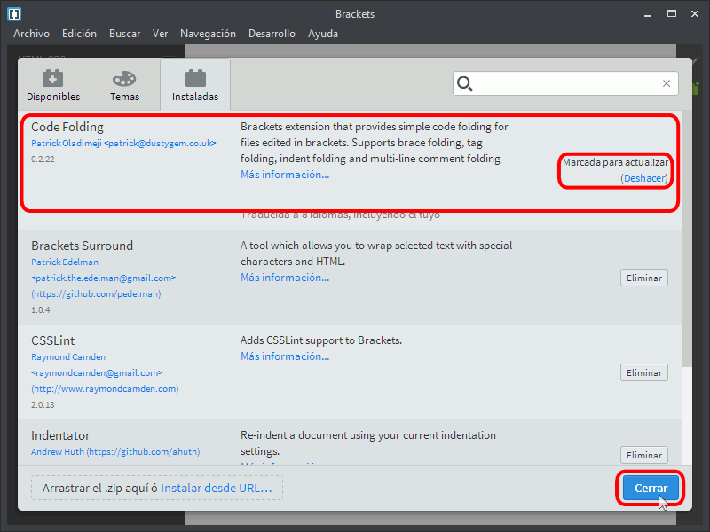
Por último, se muestra un aviso dando opción a actualizar las extensiones y reiniciar Brackets. Hacer clic en el botón "Actualizar extensiones y recargar" para terminar.
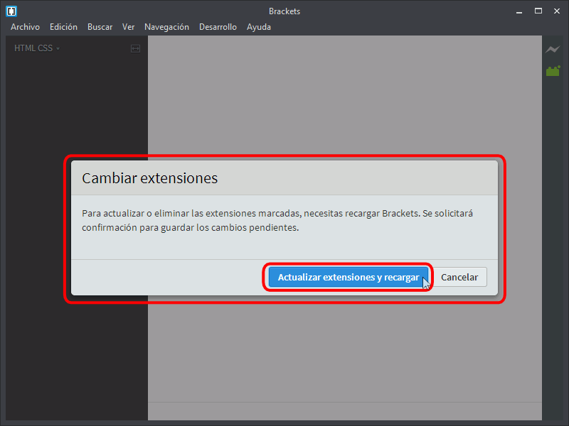
Al reiniciarse, las extensiones ya están actualizadas.
En este curso se utilizarán las siguientes extensiones:
Otras extensiones que pueden ser interesantes:
La extensión Brackets Surround permite agregar etiquetas a fragmentos de código seleccionados con el ratón.
Para utilizar esta extensión, hay que:
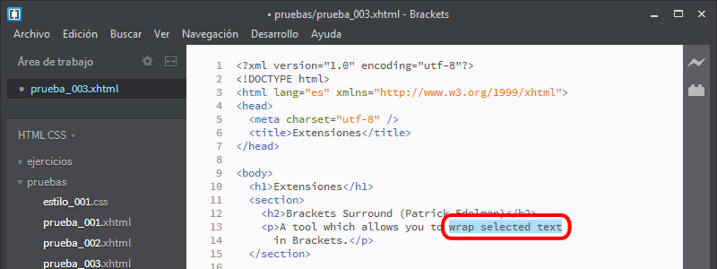
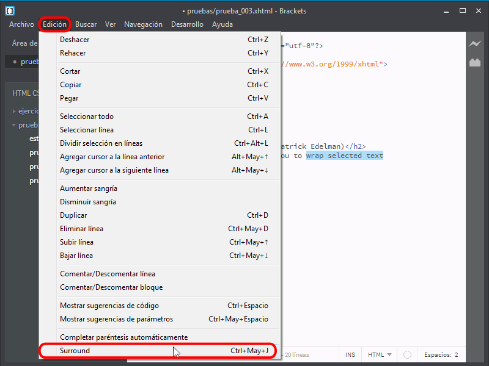
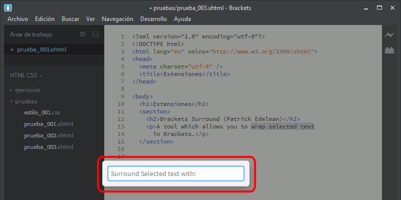
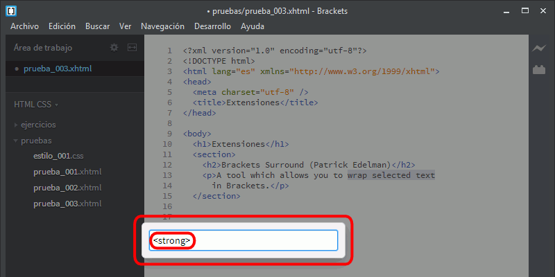
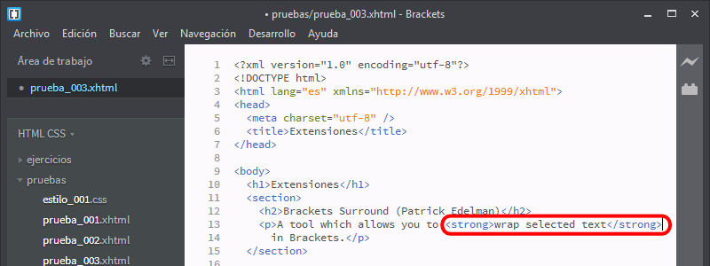
La extensión Indentator permite sangrar un documento completo de acuerdo con la configuración de sangría.
El documento siguiente no tiene ningún sangrado, lo que dificulta su lectura y, sobre todo, la detección de errores.
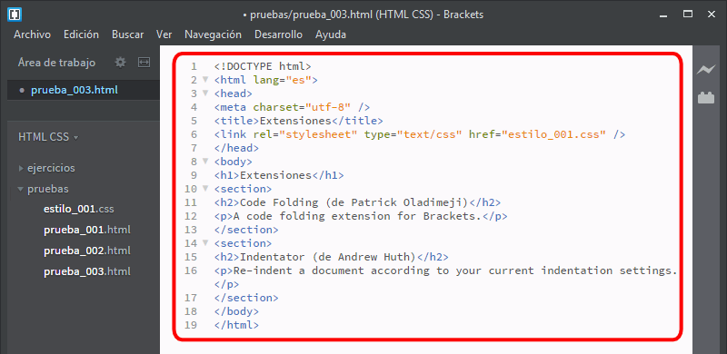
Para sangrar el documento se debe elegir la opción de menú o usar el atajo de teclado Ctrl+Alt+i.
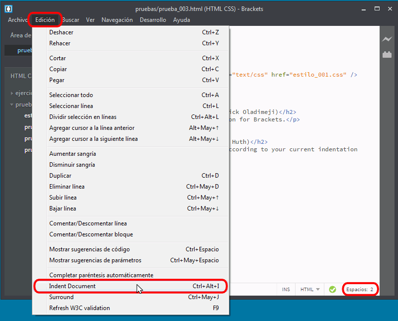
El documento se sangrará con el número de espacios de la configuración de sangría (se recomienda 2 espacios como sangría).
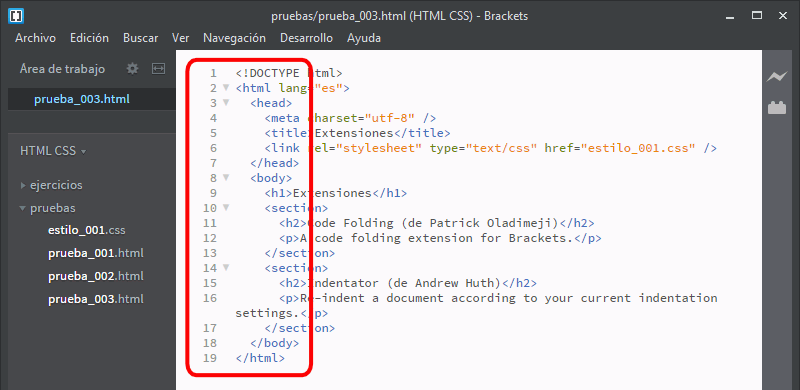
El único problema en el documento obtenido es que normalmente las etiquetas <head> y <body> no se suelen sangrar, pero esta extensión las sangra como el resto. Para quitarle esa sangría, se debe seleccionar el texto ...
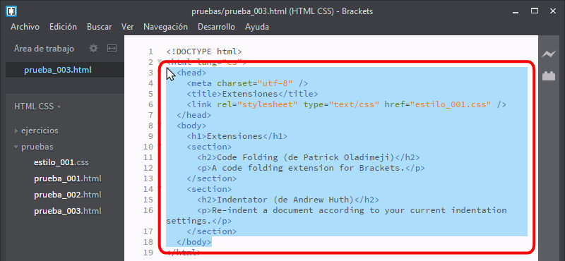
... y elegir la opción de menú .
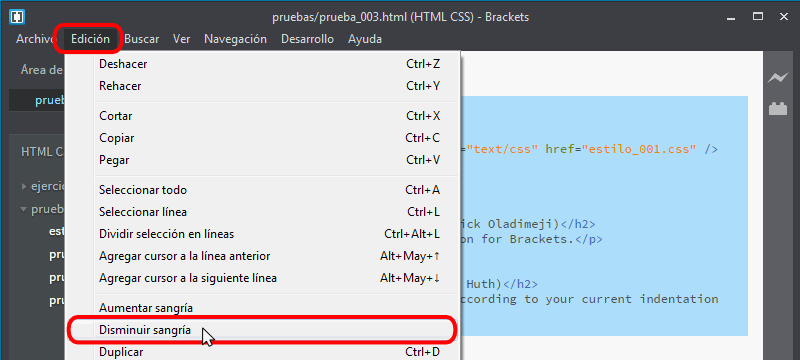
Así obtendremos el sangrado deseado en todo el documento.
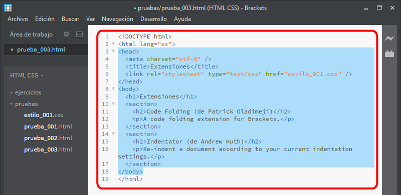
La extensión Indent softwrapped lines hace que las líneas largas (que no caben en una sola línea) tengan el mismo sangrado en todas las líneas.
Esta extensión no necesita configuración.
La ventaja de tener el código fuente sangrado correctamente es que resulta más fácil entender cómo se encuentran anidados los elementos, es decir, la estructura de la página. El problema son las líneas largas (que no caben en una sola línea de la pantalla), porque ocupan varias líneas que empiezan desde la izquierda y dificultan el reconocimiento visual de los bloques anidados, como muestra la imagen siguiente:
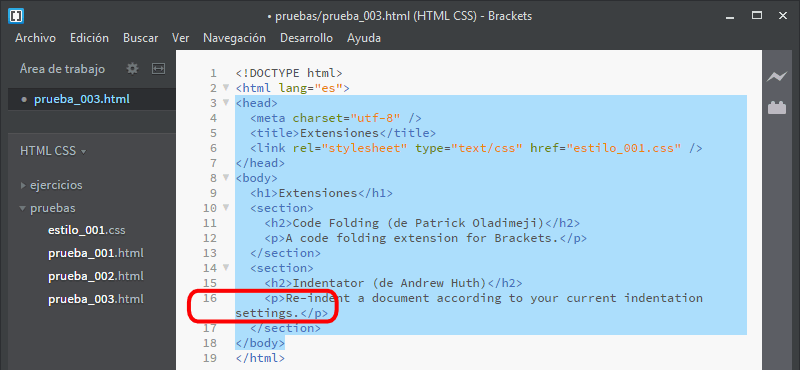
Una vez instalada, las líneas largas comienzan en la misma posición que su primera línea, como muestra la imagen siguiente:
La extensión White Space Sanitizer elimina los espacios en blanco al final de las líneas y sustituye los tabuladores por espacios en blanco.
Esta extensión no necesita configuración.
Si se abre un fichero que tiene tanto tabuladores como espacios, se muestra un aviso para corregirlo en ese momento, sustituyendo los tabuladores por espacios. En cualquier caso, cada vez que se guarda un documento, se sustityen los tabuladores y se eliminan los espacios en blanco al final de las líneas.
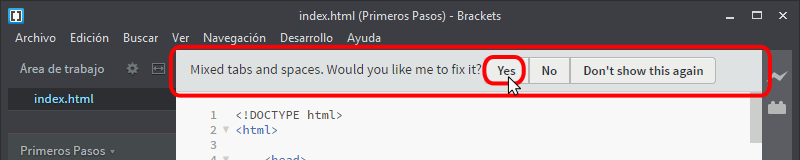
La extensión W3CValidation permite validar un documento HTML o XHTML mediante el validador del W3C.
La extensión W3CValidation añade un icono en la barra de estado. Cada vez que se guarda el documento, el documento se valida. En caso de que el documento no contenga errores, se muestra un icono de color verde.
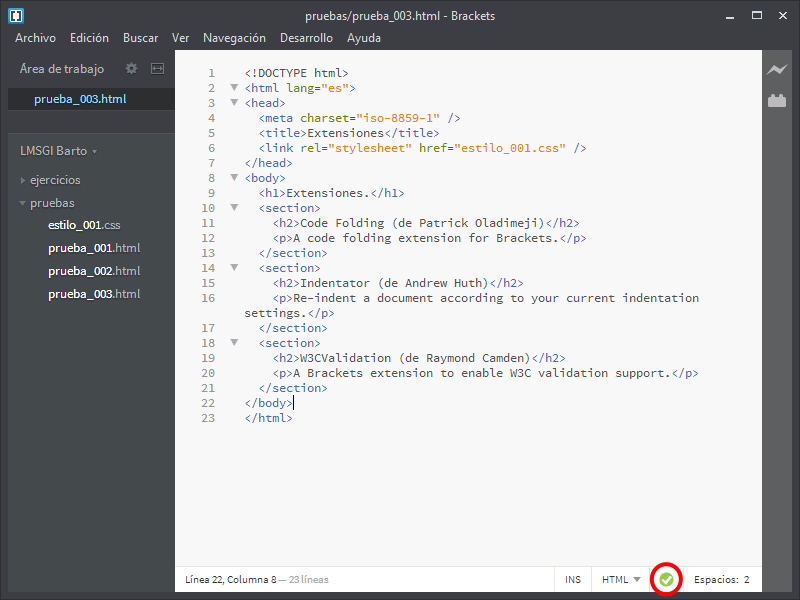
En caso de que el documento contenga errores, se muestra un triángulo amarillo. Situando el cursor sobre el triángulo, Brackets muestra un letrero resumiendo el estado de la validación.
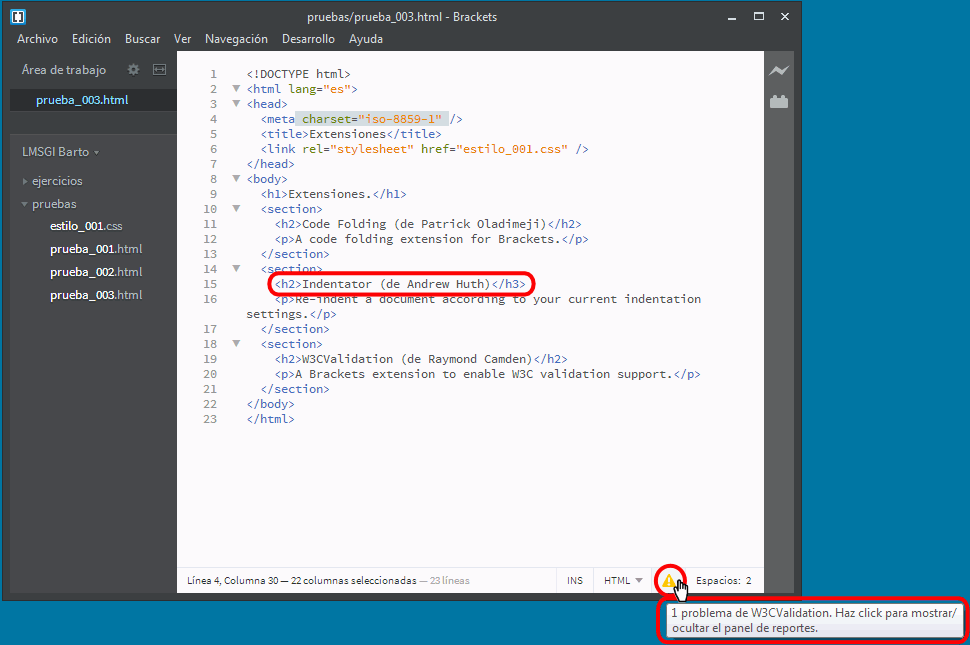
Haciendo clic en el triángulo, Brackets nos muestra los detalles de los errores detectados. Deberíamos ser capaces de corregir los errores a partir de las indicaciones del validador del W3C.
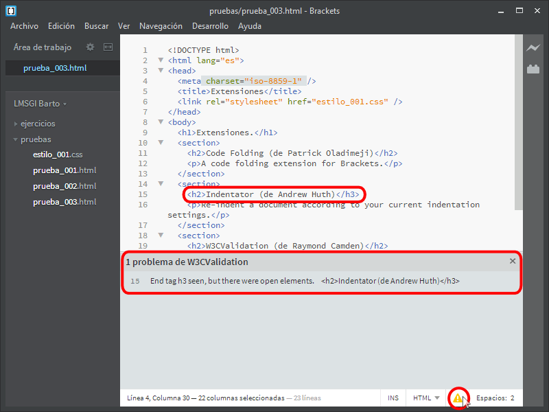
La extensión CSSLint permite validar una hoja de estilo CSS mediante el validador http://csslint.net/. Este validador no sólo detecta los errores que detecta el validador del W3C, sino que también proporciona muchos consejos para mejorar las hojas de estilos, como se comenta en la lección dedicada a CSSLint.
La extensión CSSLint añade un icono en la barra de estado. Cada vez que se guarda la hoja de estilo, la hoja de estilo se valida. En caso de que la hoja de estilo no contenga errores, se muestra un icono de color verde.
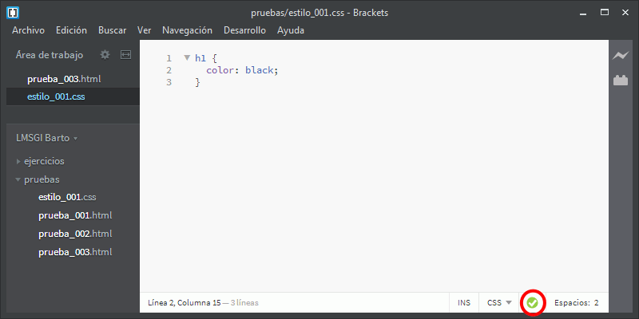
En caso de que la hoja de estilo contenga errores, se muestra un triángulo amarillo. Situando el cursor sobre el triángulo, Brackets muestra un letrero resumiendo el estado de la validación.
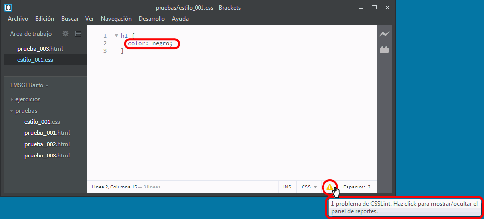
Haciendo clic en el triángulo, Brackets nos muestra los detalles de los errores detectados. Deberíamos ser capaces de corregir los errores a partir de las indicaciones de CSSLint.
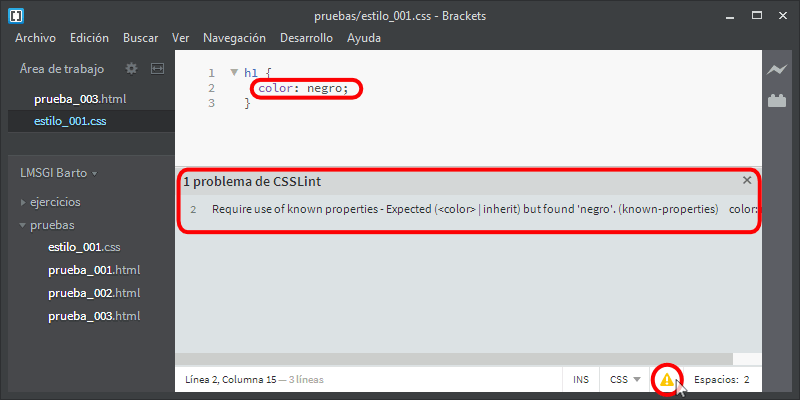
La extensión CSSLint se puede configurar eligiendo qué avisos queremos recibir y cuáles no. Para ello hay que crear un archivo .csslintrc que se debe guardar en la raíz del árbol de archivos de nuestro proyecto (véase el apartado "Árbol de archivos" en la lección sobre instalación y uso de Brackets).
El ejemplo siguiente muestra un ejemplo de archivo .csslintrc. Para desactivar un tipo de aviso, hay que cambiar de true a false el apartado correspondiente.
Nota: en realidad, basta con que el archivo .csslintrc contenga las propiedades con valor false y se pueden borrar las propiedades con valor true.
{
"adjoining-classes": true,
"box-model": true,
"box-sizing": true,
"bulletproof-font-face": true,
"compatible-vendor-prefixes": true,
"display-property-grouping": true,
"duplicate-background-images": true,
"duplicate-properties": true,
"empty-rules": true,
"errors": true,
"fallback-colors": true,
"floats": true,
"font-faces": true,
"font-sizes": true,
"gradients": true,
"ids": true,
"import": true,
"important": true,
"known-properties": true,
"order-alphabetical": true,
"outline-none": true,
"overqualified-elements": true,
"qualified-headings": true,
"regex-selectors": true,
"rules-count": true,
"selector-max-approaching": true,
"selector-max": true,
"selector-newline": true,
"shorthand": true,
"star-property-hack": true,
"text-indent": true,
"underscore-property-hack": true,
"unique-headings": true,
"universal-selector": true,
"unqualified-attributes": true,
"vendor-prefix": true,
"zero-units": true
}
En los ejercicios propuestos en estos apuntes, las hojas de estilo no cumplen todas las recomendaciones de CSSLint (por diferentes motivos). En la lección CSSLint se explican algunos de los avisos que no se tienen en cuenta en los ejercicios. Para desactivar esos avisos, se puede utilizar el siguiente archivo .csslintrc.
{
"adjoining-classes": false,
"box-model": false,
"box-sizing": false,
"bulletproof-font-face": false,
"import": false,
"order-alphabetical": false,
"overqualified-elements": false,
"qualified-headings": false,
"regex-selectors": false,
"unqualified-attributes": false,
"unique-headings": false
}